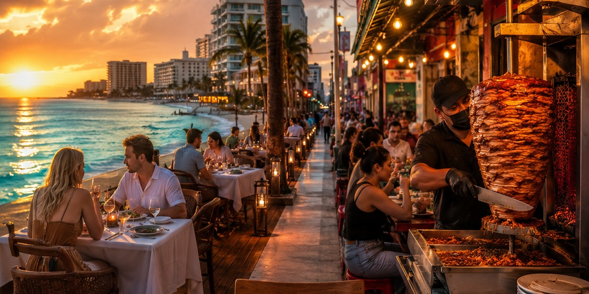

First-Time Mexico Vacation Planner: Cancun, Riviera Maya, Tulum or Punta Cana?
An honest, decision-first read on where to take your first Caribbean beach trip: Cancun, the Riviera Maya, Tulum or Punta Cana, and who each one actually suits.

A mindful choice of destinations, hotels and holiday format — without mistakes or overpaying.
Choose a country →Three principles that help you choose your holiday consciously.
We look for recurring complaints and patterns in reviews, rather than relying solely on the overall rating.
We assess terrain, distance to the beach and the actual position of the hotel using maps and guest photos.
We check taxes, resort fees and cancellation terms so you can see the true price of your holiday.
Mexico is the current main focus, while Egypt and Turkey remain as supporting sections
Mexico resort & hotel guides
Cancun, Playa del Carmen & Tulum
Real travel planning without booking mistakes
Red Sea resort guides
Flights, hotels & entry planning
Resorts, beaches & practical travel tips
Istanbul & beach resort guides
Areas, hotels & trip planning
Smart resort planning & local insights
Three core guides to read before anything else

An honest, decision-first read on where to take your first Caribbean beach trip: Cancun, the Riviera Maya, Tulum or Punta Cana, and who each one actually suits.

Before you reserve a Cancun hotel, check the area, beach, reviews, final price, room type, resort style, and cancellation rules.

What the U.S. and Canada advisories really mean, which everyday risks matter most for tourists, and how to travel the Riviera Maya without the avoidable mistakes.
Navigate Tulum's food scene without the shock: overpriced beach clubs, authentic food in Town, avoiding hidden tips, and real meal budgets.
Near-perfect beach weather, the odd windy 'norte' day, Christmas and New Year crowds, peak prices, and how to book the high season without overpaying.
Real summer heat, daily afternoon storms, the 2026 sargassum context, hurricane timing, and the low-season prices that make summer worth it for the right traveler.
Resort galas and fireworks in Cancun, jungle venues and beach bonfires in Tulum. How big the holiday price premium gets, and what to book how far ahead.
When it happens, where the party actually is, what it does to prices, and how families and quiet travelers can dodge the crowd without skipping Cancun.

Hotel Zone convenience vs downtown value, the Yucatecan dishes worth seeking out, real prices by level, and how to avoid the tourist-trap meal.
Where to base yourself, how to meet people, solo safety done honestly, and what a trip alone really costs in Cancun and the Riviera Maya.
The honest answer on whether Cancun works with a baby — calm-water bases, hotel checks, formula and water safety, car seats for the transfer, sun, heat, and pediatric care.
Skip the 3% foreign transaction fee, dodge the dynamic currency conversion trap, get fee-free pesos at the ATM, and carry the right two cards in Mexico.
Travel Radar LK is an independent project for travelers who want to plan trips more consciously. The current main focus is Mexico and the Caribbean, while Egypt and Turkey remain as supporting sections. The site publishes practical articles, location comparisons, and honest travel breakdowns without unnecessary noise.
If the site uses affiliate links anywhere, this is stated openly. Read more about the project →